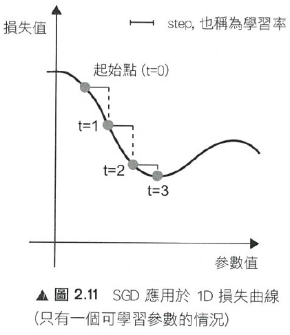

數學基礎：從微分與偏微分到梯度(gradient)
Table of Contents
1. 微積分找極值方式
1.1. 微分
一般微積分說「要找極大值或極小值的式子做微分等於 0 找解」，找到的不是極大值，就是極小值，是極大還是極小就看二階微分帶入找出來的解，看結果是大於 0，還是小於 0。1
以\(f(x)=x^2 - 10x + 1\)為例
其微分結果為\(f^\prime (x) = \frac{\partial f(x)}{\partial x} = 2x-10\)
設微分值等於 0，則\(f^\prime (x) = \frac{\partial f(x)}{\partial x} = 2x-10 = 0 \)
故\(x=5\)
1.2. 二階微分
即是對\(f^\prime (x)\)再次微分，以\(f^{\prime \prime}(x)\)表示，
\[ f^{\prime\prime}(x) = \frac{\partial f^\prime (x)}{\partial x} = 2 > 0 \]
所以，剛剛的式子找到的極小值，即，當\(x=5\)時有極小值-24。這個範例是可以找到唯一解的式子，若無法找到唯一解，就要靠找近似解的方式去逼近極值，其中一種方法就是梯度下降法(gradient descent)。
1.3. 導數
導數（英語：Derivative）是微積分學中重要的基礎概念。一個函數在某一點的導數描述了這個函數在這一點附近的變化率。導數的本質是通過極限的概念對函數進行局部的線性逼近。當函數\(f\)的自變數在一點\(x_0\)上產生一個增量\(h\)時，函數輸出值的增量與自變量增量\(h\)的比值在\(h\)趨於 0 時的極限如果存在，即為\(f\)在\(x_0\)處的導數，記作\(f'(x_0)\)或\(\frac{df}{dx}(x_0)\)。例如在運動學中，物體的位移對於時間的導數就是物體的瞬時速度。2
導數是函數的局部性質。不是所有的函數都有導數，一個函數也不一定在所有的點上都有導數。若某函數在某一點導數存在，則稱其在這一點可導，否則稱為不可導。如果函數的自變數和取值都是實數的話，那麼函數在某一點的導數就是該函數所代表的曲線在這一點上的切線斜率。
以曲線 \( y=0.01x^2+0.4x \)為例，求曲線在 \(x=5\)這點的斜率之計算方式為：
1: # coding: utf-8 2: from pylab import * 3: mpl.rcParams['font.sans-serif'] = ['SimHei'] 4: plt.rcParams['axes.unicode_minus']=False 5: import numpy as np 6: import matplotlib.pylab as plt 7: 8: def numerical_diff(f,x): 9: h = 1e-4 10: return (f(x+h) - f(x-h))/(2*h) 11: 12: def function_1(x): 13: return 0.1*x**2 - 0.4*x 14: 15: def tangent_line(f, x): 16: d = numerical_diff(f, x) 17: print(d) 18: y = f(x) - d*x 19: return lambda t:d*t + y 20: 21: plt.clf() 22: x = np.arange( 0.0, 20.0, 0.1) 23: y = function_1(x) 24: plt.xlabel("x") 25: plt.ylabel("f(x)") 26: plt.xlim(-2, 20) 27: plt.ylim(-2, 20) 28: tf = tangent_line(function_1, 5) 29: y2 = tf(x) 30: 31: plt.plot(x, y, label='曲線') 32: plt.plot(x, y2, label='切線') 33: plt.plot(x, x-4.5, label='割線') 34: plt.legend(loc='upper left') 35: plt.savefig("numDiff-1.png")
s: 0.5999999999994898
Figure 1: 微分：某一點的斜率
如圖1，若要求曲線在某一點(\(x=5\))的斜率，可以先畫出一條曲線上通過\(x=5\)的割線，此割線通過曲線上的兩個點(\(x=5, x=5+h\))，透過這兩點可求出該割線之斜率，若將\(h\)的值最小化，即可求出曲終在點\(x=5\)上的斜率，此即微分的概念。
2. 導函數與梯度下降 3
想像一個連續平滑函數\(f(x)=y\)，即，\(f\)將一個實數\(x\)映射(mapping)到另一個實數\(y\)，因為函數是連續實數，所以在 x 的微小變化也只會導致 y 的微小變化。假設 x 增力了一個很小的值\(\epsilon_x\)，導致 y 做了\(\epsilon_y\)的改變，其數學式可以寫成：
\(f(x+\epsilon_x) = y + \epsilon_y \)
因為函數\(f\)為平滑連續函數，故當\(\epsilon_x\)足夠小時，在 x 附近\(f(x)\)的變化(\(\epsilon_y\))和\(\epsilon_x\)是成線性關係的，即
\(f(x+\epsilon_x) = y + a*\epsilon_x \)，即
\(f(x+\epsilon_x) - y = a*\epsilon_x \)，也即
\(f(x+\epsilon_x) -f(x) = a*\epsilon_x \)
這個線性逼近只有在當\(\epsilon_x\)足夠小時才有效，因為是線性關係，\(a\)變是斜率，也就是 rate of change。這個斜率\(a\)被稱為\(f\)在\(x\)這個點上的導函數(簡稱導數或稱微分，derivative)，也就是圖1上的切線斜率。當\(a\)大於 0，表示若\(x\)稍微增大，則\(f(x)\)變大，反之亦然；而\(a\)的絕對值(導數的大小)則表示\(f(x)\)在\(x\)值變化了\(\epsilon_x\)後所增加或減少的幅度。
數學上通常以\(f^{'}(x)\)來代表\(f(x)\)的導函數，\(f^{'}(x)\)就是\(f(x)\)在\(x\)處的斜率。如果把變數\(x\)推廣成張量變數\(W\)，則：函數\(f(W)\)在\(W\)點的梯度就是該函數的張量導函數(\(f^{'}(W)\)，這就是把導函數的概念從單一變數函數\(f(x)\)推廣到多維張量函數\(f(W)\)上，這時斜率就變成梯度，斜率 slope 是 rate of change in x space，而梯度 gradient 則是 rate of change in W space。
假設有一個輸入向量\(x\)、一個轉換矩陣\(W\)、目標值\(y\)和一個損失函數 loss，我們可以使用 W 來計算預測值\(y_{pred}\)和目標值 y 之間的損失(差距)：
1: y_pred = dot(W, x) 2: loss_value = loss(y_pred, y) = loss(dot(W, x), y)
上述式子也可以寫成
1: loss_value = f(W)
也就是損失函數\(f\)是以\(W\)為變數的函數。
回憶上述導函數的運用，對每個可微分函數\(f(W)\)，其對於變數\(W\)的導函數就是\(f(W)\)在\(W\)處的梯度，我們把\(f(W)\)的梯度用 gradient \(f(W)\)來表示，\(f(W)\)是一個純量，但 gradient \(f(W)\)是一個張量，它的 shape 和\(W\)是一樣的。
那麼，何謂隨機梯度下降？給定一個可微分函數，在函數的導數為 0 時(斜率為 0)，那個點就可能是一個區域的極大或極小值，所以只需找到導數為 0 的所有點，並加以檢查，就可以知道函數\(f(x)\)在哪個 x 為最小值。
套用到神經網路，這可藉求解方程式\(f^{'}(W)=0\)的\(W\)來完成，也就是找出在哪個權重組合\(W\)點上\(f(W)\)有最小值。這是 N 個變量的多項方程式，其中，N是神經網路張量元素的數量，雖然當 N=2 或 N=3 時可以手動求解，但實際的神經網路其參數通常不會少於幾千個，且可能超過千萬，所以要解這樣的方程式並非易事。
面對這個問題，我們可以依據下列步驟逐步逐個修改參數：
- 取出一批次量的訓練樣本 x 和相對應的目標 y(即 label)
- 以 x 為輸入資料，執行神經網路獲得預測值\(y_{pred}\)。
- 計算這個批次量神經網路的損失值，所謂的損失就是 y 與\(y_{pred}\)間的差距。
- 計算損失值的神經網路權重的梯度(反向傳播)。
- 將參數稍微向梯度的反方向移動，例如\(W=step*gradient\)，從而降低一點批次的損失。
上述這種方法稱為小批次隨機梯度下降(mini-batch stochastic gradient descent, mini-batch SGD)，名稱中的隨機(stochastic)指的是每批次資料都是隨機抽取的(stochastic 為 random 的同義詞)。圖2展示的是只有一個參數、一個訓練樣本的簡單神經網路訓練過程，如圖所示，為每個 step 選一個合理值是很重要的，step 太小則需要多次迭代才能下降曲線，且易進入局部最小值；若 step 過大，則參數的更新可能會跳到曲線上一個毫不相干的點，並可能略過真正的最小值。

Figure 2: SGD 應用於 1D 損失函數
mini-batch SGD 演算法可以在每次迭代時只取單一筆樣本和目標，而非一次取一批資料（即，batch 等於 1 時），此時變成為真正的 SGD；相反的，當 batch 等於所有可用資料時，則變成 batch SGD(整批 SGD)。實務上，梯度下降法應用於神經網路的情境多在高維空間，每個權重係數都會成為空間中的一個自由維度，其數量可能達到上千萬。故而，其真正的下降過程不可能以影像方式呈現，圖3為一典型的 2D 曲面損失值的梯度下降，然而在多維、多軸的真實下降並非如此。

Figure 3: 2D 曲面的損失值梯度下降(有兩個參數)
除上述 SGD 模式外，SGD 尚存在許多變體，常見的有：momentum SGD, Adagrad, RMSProp 等，這些 SGD 我們稱為最佳化方法(optimization methods)或優化器(optimiaers)。
3. 微分
微分也是一種線性描述函數在一點附近變化的方式。微分和導數是兩個不同的概念。但是，對一元函數來說，可微與可導是完全等價的。可微的函數，其微分等於導數乘以自變數的微分\(dx\)，換句話說，函數的微分與自變數的微分之商等於該函數的導數。因此，導數也叫做微商。函數\(y=f(x)\)的微分又可記作\(dy=f'(x)dx\)。
3.1. 定義
\( \frac{df(x)}{dx}=\lim\limits_{\Delta x \to 0}\frac{f(x+\Delta x)-f(x)}{\Delta x} \)，亦可寫成 \( f'(x) = \frac{df}{dx} = \frac{dy}{dx} \)，此為\( f(x) \)的導函數。導函數的幾何意義為：某曲線的斜率。
3.2. 基本運算
- \( f(x)=k: f'(x) = \lim\limits_{\Delta x \to 0} \frac{f(x+\Delta x)-f(x)}{\Delta x} = \lim\limits_{\Delta x \to 0} \frac{k - k}{\Delta x} = 0 \), 即，所有常數的微分均為 0
- \( f(x)=x: f'(x) = \lim\limits_{\Delta x \to 0} \frac{f(x+\Delta x)-f(x)}{\Delta x} = \lim\limits_{\Delta x \to 0} \frac{(x+\Delta x) - x}{\Delta x} = 1 \)
- \( f(x) = x: \frac {dx}{dx} = \lim\limits_{\Delta x \to 0} \frac{(x+ \Delta x) - x}{\Delta x} = \lim\limits_{\Delta x \to 0} \frac {\Delta x}{\Delta x} = 1 \)
- \( f(x)=x^2: f'(x)=\lim\limits_{\Delta x \to 0}\frac{f(x+\Delta x)-f(x)}{\Delta x} = \lim\limits_{\Delta x \to 0} \frac{(x+\Delta x)^2-x^2}{\Delta x} \\= \lim\limits_{\Delta x} \frac{(x^2+2x\Delta x+(\Delta x)^2-x^2}{\Delta x} \\= \lim\limits_{\Delta x \to 0}\frac{2x+\Delta x}{1} = 2x \)
- \( f(x) = ax^2: \frac{df(x)}{dx} = \lim\limits_{\Delta x \to 0} \frac {a(x+\Delta x)^2-ax^2}{\Delta x} = a\lim\limits_{\Delta x \to 0} \frac {x^2 + ax \Delta x+(\Delta x)^2-x^2} {\Delta x} = a \lim\limits_{\Delta x \to 0} \frac{2x\Delta x + (\Delta x)}{\Delta x} = a \lim\limits_{\Delta x \to 0}(2x+\Delta x) = 2ax \)
- \( f(x) = ax^n = \frac{dax^n}{dx}=a\frac{dx^n}{dx}=anx^{n-1} \)
3.3. 微分公式
- 乘法: \( (f \cdot g)' = f'\cdot g + f \cdot g' \)
- 除法：\( (\frac{f}{g})' = \frac{f' \cdot g - f \cdot g'}{g^2} \)，例：\( \\f(x)=\frac{x^2+5}{3x+2}, f'(x)=\frac{(2x)(3x+2)-(x^2+5)(3)}{(3x+2)^2} \)
- 連鎖律：\( (f(g))'=f'(g)\cdot g' \)，例：\( \\f(x)=(x^2+4x+5)^{10}, f'(x)=10(x^2+4x+5)^9(2x+4) \)
4. 數值微分
4.1. 定義
\( \frac{df(x)}{dx} = \lim\limits_ {\Delta x \to 0}\frac{f(x+\Delta x)-f(x)}{\Delta x} \)
4.2. wrong solution
1: def numerical_diff(f,x): 2: h = 1e-50 3: return (f(x+h) - f(x))/(h)
4.3. correct solution
1: def numerical_diff(f,x): 2: h = 1e-4 3: return (f(x+h) - f(x-h))/(2*h)
4.4. Example: \( y = 0.01x^2+0.1x) \)，求\(\frac{dy}{dx}|_{x=5}=?
\( \frac{dy}{dx}\vert_{x=5} = (0.02x+0.1)\vert_{x=5} = 0.2 \)
4.5. 偏微分(partial differentiation)
當變數個數超過 1 個時，以\(\partial\)來取代\(d\)，使其中某一變數可變、固定其他變數，對函數進行微分，即偏微分。例：
- \( \frac{\partial f}{\partial x}\vert_{x_0,y_0} = \lim\limits_{\Delta x \to 0}\frac{f(x_0+\Delta x, y_0)-f(x_0+y_0)}{\Delta x}\)，以\(x\)為變數，固定變數 y，對函數\(f\)做偏微，\(f\)為一雙變數函數。
- \( \frac{\partial f}{\partial y}\vert_{x_0,y_0} = \lim\limits_{\Delta y \to 0}\frac{f(x_0, \Delta y, y_0)-f(x_0+y_0)}{\Delta y}\)，以\(y\)為變數，固定變數 x，對函數\(f\)做偏微。
圖44為多元函數\(J(\theta_1,\theta_2)=\theta_1^2+\theta_2^2\)的曲面，因為曲面上的每一點都有無窮多條切線，描述這種函數的導數相當困難。偏導數就是選擇其中一條切線，並求出它的斜率。5
一種求出這些切線的好辦法是把其他變量視為常數，圖4即是將\(\theta_2\)固定在 0、以變數\(\theta_1\)對曲面函數\(J(\theta _1, \theta _2)=\theta^2_1+\theta^2_2)\)做偏微，換言之，求\(\theta_1^2\)的偏導數。固定\(\theta_2\)的結果為一平面(圖中的藍色方框)，圖中灰色曲面與藍色平面的紅色交集曲線可以如下公式表示：
而偏導數\(J_{\theta}(\theta_1,\theta_2)\)則表示曲線在點(0, 0, 0)處的切線關於\(\theta_2\)軸的斜率。
若曲面函數為\(f(x_0,x_1)=x_0^2+x-1^2\)，當\(x_0\)=3、\(x_1\)=0 時，計算\(x_0\)的偏微分\(\frac{\partial f}{\partial x_0}\)方式如下：
1: def numerical_diff(f,x): 2: h = 1e-4 3: return (f(x+h) - f(x-h))/(2*h) 4: 5: def function_tmp1(x0): 6: return x0*x0+4.0**2.0 7: print(numerical_diff(function_tmp1,3.0))
6.00000000000378
當\(x_0\)=3、\(x_1\)=0 時，計算\(x_1\)的偏微分\(\frac{\partial f}{\partial x_1}\)方式如下：
1: def numerical_diff(f,x): 2: h = 1e-4 3: return (f(x+h) - f(x-h))/(2*h) 4: 5: def function_tmp2(x1): 6: return 3.0**2.0+x1*x1 7: print(numerical_diff(function_tmp2,4.0))
7.999999999999119
5. 梯度與梯度下降法(Gradient Descent)6
各種 AI 模組的主要精神，基本上都是希望透過一組或多組函數的合作來精準預測正確的輸出結果，而所謂的精準預測，主要就是讓預測的誤差最小化。以最簡單的函數\(f(x)=ax+b\)為例，其預測誤差可表示為：\(error=(y-f(x)))^2\)，其中 x 為輸入，y為輸出。可透過微分將誤差最小化。
回顧微分的定義：\(f'(h)=\lim\limits_{xh}\frac{f(x)-f(h)}{x-h} \)，我們希望透過逐步的調整(增加或減少)\(a\)的值來降低誤差，在這樣的狀況中，由於只有一個變數，所以可以求算導數，讓導數為 0，求得最小值。
然而對多變數方程式來說，找到導數是十分困難的，以圖 fig:partialDerivative]]為例，由於切面是一個平面，就有無限多條切線，在實際的 AI 模組中，更可能有成千上萬個，所以我們的做法是透過偏微分來求算單一個變數的微小變化在整個函數的變化為何。
如何確定我們調整權重的方向是正確的？對一個二次曲線而言，只要沿著切線的方向走即可；而對更多維度的做法，則是梯度。假定有一函數\(f(x,y)=x^2+y^2\)，其梯度的定義是對函數中每個變數做偏微分所組成的向量空間：\( \bigtriangledown f = \left[ \frac{\partial f(x,y)}{\partial x} \frac{\partial f(x,y)}{\partial y} \right] \)。
不過這在幾何到底有什麼意義？在二維平面當中，我們可以透過畫圖的方式很快地理解，微分就是函數在某個點上變化的方向。因此，我們可以把梯度想像成一個指向最低點的指南針，他會告訴你該往哪裡走，順著走總有一天會到達最小值。那麼我們該怎麼走呢？梯度下降法給了一個公式，每次計算函數點上面的梯度，並且沿著反向的步長（step）迭代，總有一天會走到局部最小值。\( w:=w-\alpha \triangledown F(a) \)
5.1. 梯度
- 公式
\begin{equation} \label{org28d14fd} \begin{bmatrix} x_1 \\ x_2 \\ \vdots \\ x_d \\ \end{bmatrix}, \triangledown f(x)= \begin{bmatrix} \frac{\partial f(x)}{\partial x_1} \\ \frac{\partial f(x)}{\partial x_2} \\ \vdots \\ \frac{\partial f(x)}{\partial x_d} \\ \end{bmatrix} \end{equation} - 範例
已知
\begin{equation} \label{orgca94ddf} x = \begin{bmatrix} x_1 \\ x_2 \\ \end{bmatrix}, a= \begin{bmatrix} 10 \\ 1 \\ \end{bmatrix}, b= \begin{bmatrix} 5 & 4 \\ 3 & 2 \\ \end{bmatrix} \end{equation}
則
\( f(x)=a^Tx+1=\begin{bmatrix}10\\1\end{bmatrix}^T\begin{bmatrix}x_1\\x_2\end{bmatrix}+1=10x_1+x_2+1 \)
\( \triangledown f(x)= \begin{bmatrix} \frac{ \partial f(x) }{\partial x_1} \\ \frac{ \partial f(x) }{\partial x_2} \end{bmatrix}=\begin{bmatrix}\frac{\partial (10x_1+x_2+1}{\partial x_1} \\ \frac{\partial (10x_1+x_2+1}{\partial x_2}\end{bmatrix}=\begin{bmatrix}10 \\ 1\end{bmatrix} \)
6. 梯度下降法7
梯度下降法(gradient descent)是最佳化理論裡面的一個一階找最佳解的一種方法，主要是希望用梯度下降法找到函數(剛剛舉例的式子)的局部最小值，因為梯度的方向是走向局部最大的方向，所以在梯度下降法中是往梯度的反方向走。
這邊我們先大概說一下梯度，要算一個函數 f(x)的梯度有一個前提，就是這個函數要是任意可微分函數，這也是深度學習為什麼都要找可微分函數出來當激活函數(activation function)。
- 一維度的純量 x 的梯度，通常用\( f'(x) \)表示。
- 多維度的向量 x 的梯度，通常用\( \triangledown f(x) \)表示。
白話一點，一維度的純量 x 的梯度就是算 f(x)對 x 的微分，多維度的向量 x 的梯度就是算 f(x)對 x 所有元素的偏微分。在機器學習，通常有一個損失函數(loss function 或稱為 cost function，在最佳化理論我們會稱為目標函數 objection function)，我們通常是希望這個函數越小越好(也就是找極小值)。
梯度下降法是一種不斷去更新參數(這邊參數用 x 表示)找「解」的方法，所以一定要先隨機產生一組初始參數的「解」，然後根據這組隨機產生的「解」開始算此「解」的梯度方向大小，然後將這個「解」去減去梯度方向，很饒舌，公式如下:
這邊的 t 是第幾次更新參數，\( \eta \)是學習率(Learning rate)。梯度的方向我們知道了，但找「解」的時候公式是往梯度的方向更新，一次要更新多少，就是由學習率來控制的。另一方面，learning rate(\(\eta\))應該要隨著每次 t 的更新而逐漸縮小，以便利收歛，典型的作法可以讓 learning rate 以如下方式 decay: \( \eta ^ t = \frac{\eta}{\sqrt{t+1}}\)。